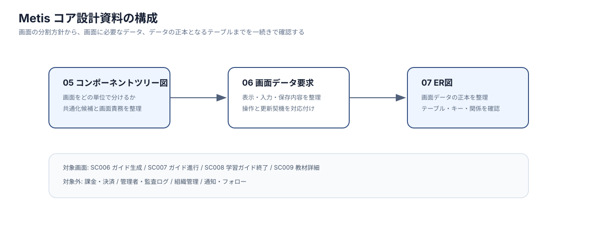

設計範囲
本資料の位置づけ
本資料は、Metis のコア体験について、画面設計とデータ設計の対応関係を整理したものです。
対象は、利用者が学習ゴールを入力し、AIが学習ガイドを生成し、そのガイドを進め、完了後に教材化するまでの一連の流れです。
以下の3点を中心に扱います。
- 画面をどのまとまりで部品化するか。
- 画面ごとにどのデータを表示・入力・保存するか。
- そのデータを支えるテーブル構造が成立しているか。
確認順序

画像ファイル: サイトで開く / GitHubで確認
| 順番 |
資料 |
内容 |
次の資料とのつながり |
| 1 |
05 コンポーネントツリー図 |
画面をReactコンポーネントとしてどの単位に分けるか |
コンポーネントごとに必要な表示・入力データを洗い出す |
| 2 |
06 画面データ要求 |
画面で表示する値、利用者が入力する値、保存・更新する値を整理する |
保存・更新される値をER図のエンティティへ対応させる |
| 3 |
07 ER図 |
画面データ要求を支えるテーブル、PK/FK、リレーションを整理する |
コア体験のデータ正本を確認する |
対象画面
| 画面ID |
画面名 |
この資料で扱う理由 |
主な論点 |
| SC006 |
ガイド生成 |
Metis の入口となるゴール入力とAI生成を扱うため |
入力下書き、タグ選択、学習スタイル、生成ジョブ、構成案、安全性検査 |
| SC007 |
ガイド進行 |
学習体験、AI相談、コード評価が集中するため |
章・ステップ、進捗、AI相談、評価ジョブ、評価結果 |
| SC008 |
学習ガイド終了 |
完了結果と教材化の境界を決めるため |
完了記録、AI評価サマリー、改善提案、教材化ジョブ |
| SC009 |
教材詳細 |
教材化された成果物の閲覧・学習導線を扱うため |
教材本体、教材版、目次、レビュー、学習開始、作者操作 |
コア体験のデータの流れ
| 段階 |
利用者の操作 |
システム側で起きること |
主なデータ |
| 1. ゴール入力 |
作りたいものを入力し、タグや学習方針を選ぶ |
入力内容を下書きとして保持し、安全性を確認する |
ゴール下書き、選択タグ、学習スタイル |
| 2. ガイド生成 |
構成案を確認し、AI生成を開始する |
非同期ジョブを作成し、AI実行とガードレール検査を行う |
ジョブ、生成ジョブ詳細、AI実行、検査結果、構成案 |
| 3. ガイド進行 |
章・ステップを読み進める |
現在位置と完了状態を保存する |
学習ガイド、章、ステップ、ガイド進捗、章進捗、ステップ進捗 |
| 4. AI相談・評価 |
質問やコード評価を実行する |
ガイド進捗に紐づけて相談履歴と評価結果を保存する |
AI相談メッセージ、評価ジョブ、評価結果 |
| 5. ガイド完了 |
学習を完了する |
完了記録とAI評価サマリーを作成する |
ガイド完了記録、AI評価サマリー |
| 6. 教材化 |
完了したガイドを教材化する |
教材化ジョブを作成し、教材本体・教材版・目次を生成する |
教材化ジョブ、教材、教材版、教材セクション、教材チャプター |
対象外の範囲
| 範囲 |
扱い |
| 課金・決済 |
教材購入には必要だが、本資料では教材閲覧までのコア構造に絞る |
| 管理者・監査ログ |
運用設計として別資料で扱う |
| 組織管理 |
将来拡張として扱い、コア体験から切り離す |
| 通知・フォロー・お気に入り |
利便性機能として扱い、主要導線には含めない |
画像ファイルの扱い
画像は review_Repository の docs/assets/ 配下に配置します。
| 配置先 |
用途 |
docs/assets/review/ |
資料構成や全体方針の図 |
docs/assets/component-tree/ |
説明用に整理したコンポーネントツリー図 |
docs/assets/er/ |
説明用に整理したER図・ER概要図 |
docs/assets/metis/ |
metis リポジトリで実際に使用している画像 |
ページ上の画像はクリックで拡大表示できます。
各画像の直下に、サイト上の画像ファイルとGitHub上の実ファイルへのリンクを置いています。
{kind=link}
{kind=link}